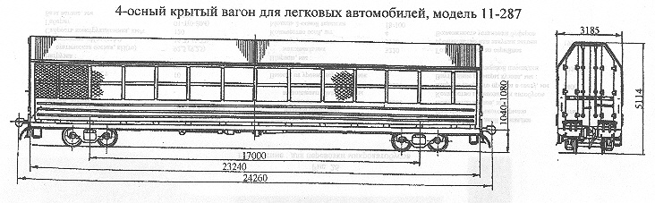

Назначение: для перевозки легковых автомобилей
Параметры
| Номер проекта | 287.00.000-01 |
| Технические условия | ТУ24.05.01.077-93 |
| Модель вагона | 11-287 |
| Тип вагона | |
| Изготовитель | АО "Алтайвагон" |
| Грузоподъемность, т | 16 |
| Масса тары вагона, т | 36 |
| Нагрузка: статическая осевая, кН(тс) |
128(13) |
| погонная, кН/м(тс/м) | 21,01(2,14) |
| Скорость конструкционная, км/ч | 120 |
| Габарит | 1-Т |
| База вагона, мм | 17000 |
| Длина, мм: по осям сцепления автосцепок |
24260 |
| по концевым балкам рамы (длина рамы) | 23240 |
| Высота от уровня верха головок рельсов, мм: максимальная |
5114 |
| до уровня пола нижнего яруса | 1220 |
| до уровня пола верхнего яруса | 3160 |
| Ширина максимальная, мм: | 3185 |
| Количество осей, шт. | 4 |
| Модель 2-осной тележки | 18-100 |
| Наличие переходной площадки | нет |
| Наличие стояночного тормоза | есть |
| Внутренние размеры кузова, мм: высота нижнего яруса |
1820 |
| высота верхнего яруса | 1850 |
| ширина по стойкам | 3000 |
| длина | 22940 |
| Ширина дверного проема в свету, мм | 2400 |
| Площадь пола, м²: нижнего яруса |
68,8 |
| верхнего яруса | 68,8 |
| Количество атомобилей, перевозимых в вагоне, шт.: ГАЗ-31029 |
8 |
| ВАЗ-2121, "Ока" | 12 |
| ВАЗ (кроме "Нивы") "Москвич" | 10 |
| Год постановки на серийное производство | 1994 |
| Возможность установки буферов | нет |